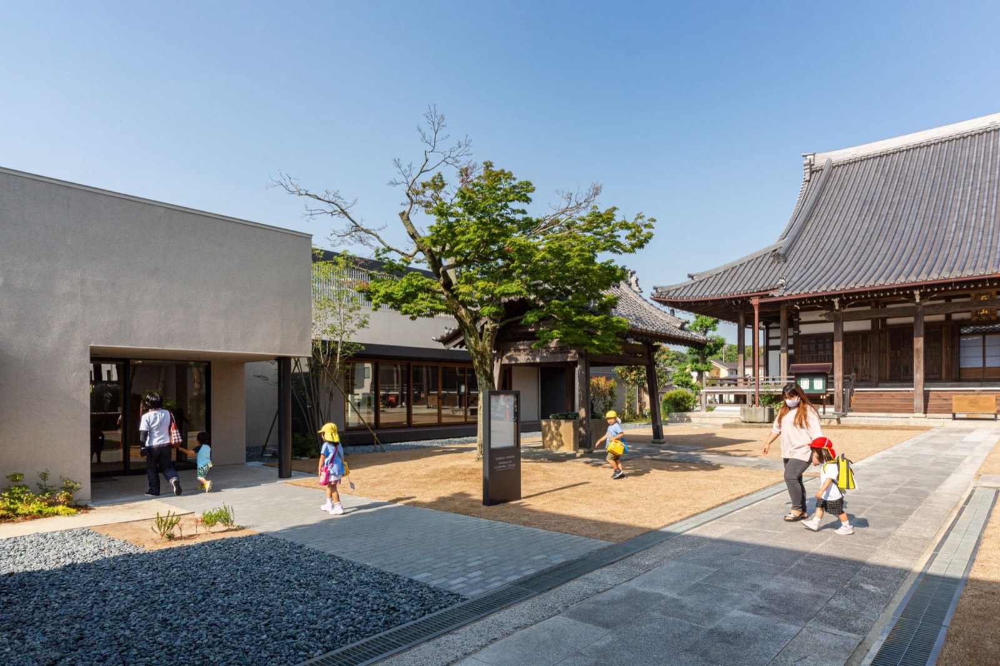
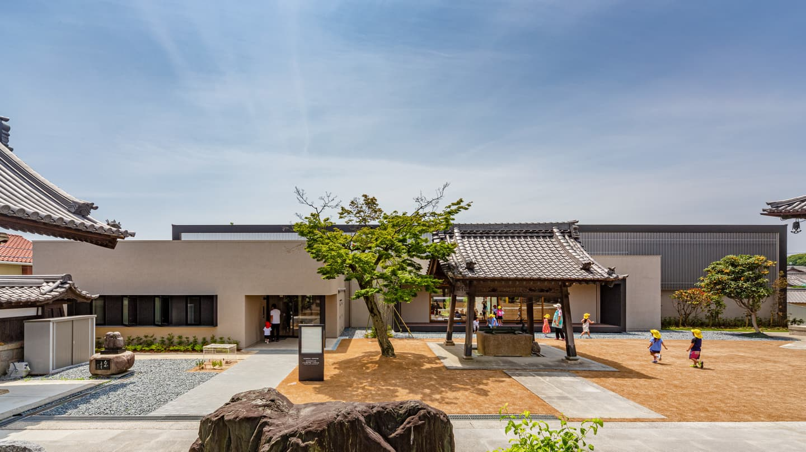
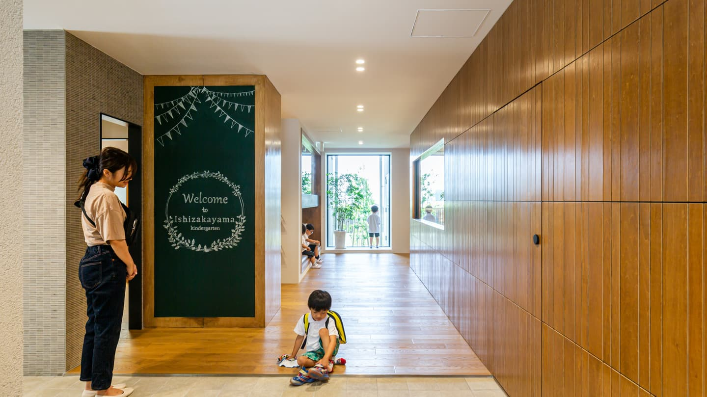
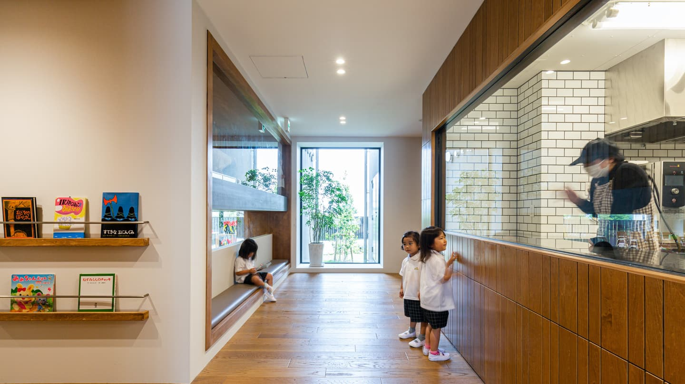
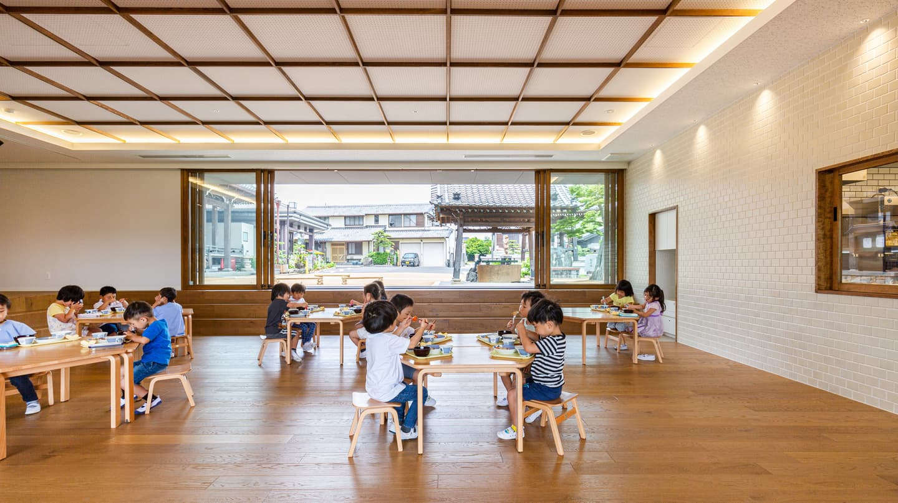
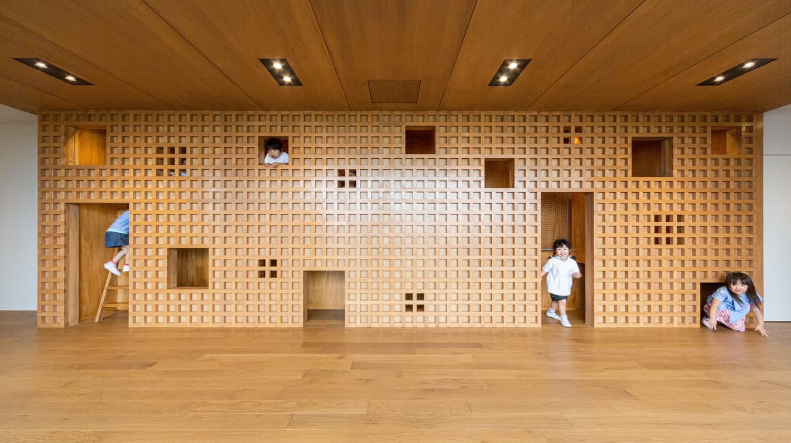

園舎の紹介
お寺の境内と繋がる園舎
登録文化財となっている蓮慶寺本堂に隣接する園舎。
遊戯室の大きな縁側は、季節の移ろいを感じたり、
様々な人との関わりが生まれる場所です。


園舎正面
2020年3月竣工
お寺の境内に建つこども園として、景観に合わせたデザインとなっています。

エントランス
年少児以上は、玄関までの送迎です。先生たちが玄関で温かくお子さんの受け入れをします。
玄関には、園児たちの作品が展示してあり、お子さんの制作をご覧いただけます。

調理室
玄関を入るとすぐ調理室が見えます。給食を作っているところが見れて、自然と食に対する興味を持ちます。
給食は、卵を使わない和給食で、卵アレルギーのお子さんも安心です。

遊戯室
開放的な遊戯室で、入園式や卒園式、誕生会など各種行事を行います。
普段は、ランチルームとして利用して、心地よく給食をいただきます。

遊び場
園内でも登ったり、くぐったり体を動かせるよう「遊び場」を設けています。写真の他にも、ボルダリングがある教室もあります。

園庭
天然芝の園庭。
築山やHAGS社の遊具、砂場、畑など自然豊かな園庭になっています。

第２園庭
園の南側の園庭。
トンネルやHAGS社の遊具、乗用玩具コースなどある楽しい園庭です。